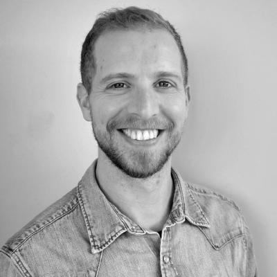
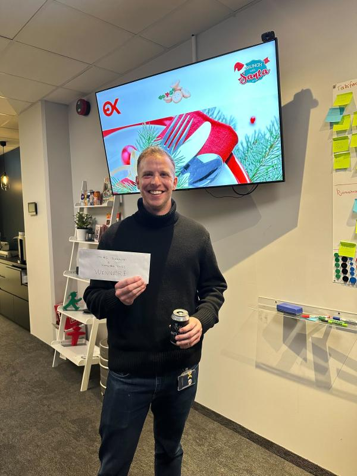

Daniel Bergmann
Hi, I'm Daniel Bergmann, an Icelandic computer programmer based in Basel.I spend most of my professional time writing code and helping my apprentices get better at writing code.

Sometimes I write on my blog at danielbergmann.ch.
I constantly read (and discuss topics) on Hacker News.
Lets play a correspondence game on Lichess.
Code, hacking and mentorship
I write open source code. You can find some of my code on Github.I am a certified Berufsbildner (apprenticeship mentor) in Switzerland and this is the most important part of my career. In the age of AI, careers are uncertain. I make sure young people have the right skills they need to succeed in the future.
I am an active white hat hacker and love exploring that field in my free time. At work I benefit from that hobby by building robust tools for my clients and colleagues. I have won hacking competitions and CTFs.

A picture of yours truly after winning a hacking tournament hosted by Varist - Cyber security
Life is more than work
I grow veggies in my garden, brew my own beer and bake my own bread (thats shy I'm getting fat).I travel around and play OTB Chess at open tournaments.
I have been programming in my free time since I was a kid.
I am a proud member of the Coders Only developer community in Zürich
I have played table tennis since I was a kid. I have played for clubs like Víkingur in Iceland, Nanjing University in China and TTC Basel in Switzerland. I've won a few national titles, tournaments and leagues in singles and with my teams. It's a fun sport with great people.
I know a few languages:
- Icelandic (Native)
- English (C2)
- Mandarin Chinese (C2)
- Nanjing Chinese dialect (C1)
- German (B2)
- Swiss German dialect (...loading, please wait)
- Spanish (B1)